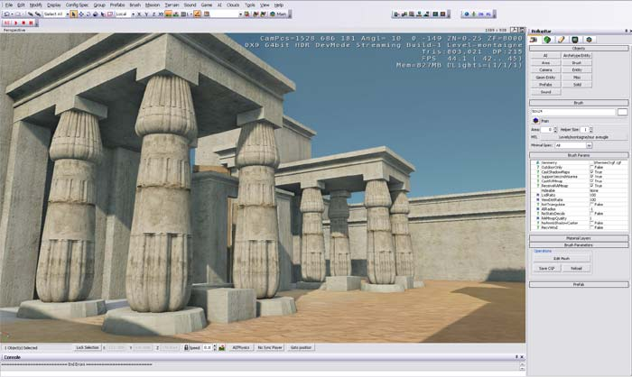

I & E VIENNA 2008--ABSTRACTSHorst BEINLICH Datenrecherche über die Internet-Version von SERat hinaus In dem Vortrag werden spezielle Suchmöglichkeiten in den Materialien der Würzburger Ritualszenen-Datenbank SERaT demonstriert, die im Internet nicht zur Verfügung stehen. Vincent EUVERTE A computer-assistance for the student, the epigraphist, and the philologist The Rosette Project started with a dream: how and to what extent the technology could assist the hieroglyph reader? There are many answers to that simple question; it is our purpose today with only few but talented and committed benevolents. Moreover, we will propose some routes which may broader it toward a common standard such as Manuel du Codage (MdC) 2008, Hieroglyphs in Unicode, consistent lexicographic word lists, …. What is the Rosette Project today? A three-year old online application, with still a long road ahead:
Why and how Rosette could contribute to Egyptology? The essential concept developed by Rosette is “integration”. From original text capture, to encoding, to displaying hieroglyphs, to searching a dictionary, to capitalize a corpus of ancient texts, to make all these freely available on the Web, in a user-friendly environment.
Should a worldwide standard emerge in the coming years, it could allow all texts to be encoded in a unique format, available in one single database, with a common dictionary encompassing every expert's knowledge, assisted by a syntactic engine, and in multi-language translations. Even if these standards are not ready yet, nothing prevents to start capturing the data in a temporary format. Whatever Rosette can collect from now on, it will be easy to convert and transfer it to any future “official database”, blessed by the Egyptology Community, as soon as this database is created. Is not it worth starting the data collection now, in parallel with the development of the new standards? *** Michael EVERSON Yod, Unicode, and future options for Egyptian encoding The author will lead a discussion about the encoding of the Latin transliteration character Egyptological Yod. He will also report on the successful encoding of the Gardiner set of Egyptian hieroglyphs and discuss future extensions of the character set. *** Jörg GRÜTZKAU Hieroglyphic Texts and XML In this presentation I will hold a speech for the creation of rules for a digital representation for hieroglyphic texts. The time is ripe to combine diverse computer based technologies in a constructive and enduring way. The point is not to follow technological crazes. Rather there is a demand to define a way to use Information Technology for easy sharing and for long-term archiving of hieroglyphic texts. Egyptologists are a relatively small group of experts - and even smaller is the group of experienced IT persons within the subject of Egyptology. I am convinced that this situation will be a excellent opportunity to involve the group "Informatique et Egyptologie". In this paper I will present ideas and concepts that are important for a document type definition for hieroglyphic text in format XML. As well I will present a number of aspects concerning the cooperation with other important technologies. *** Svenja A. GÜLDEN Trismegistos: An interdisciplinary portal of papyrological and epigraphical resources "Trismegistos" is an interdisciplinary portal of (published) papyrological and epigraphical resources dealing with Egypt and the Nile valley between roughly 800 BC and AD 800 developed by the project Multilingualism and Multiculturalism in Graeco-Roman Egypt in close cooperation with "Trismegistos" partner projects as well as other (international) partners who have their own separate databases. This project was made possible by the Alexander von Humboldt – Stiftung who awarded for the second time the so-called Sofja Kovalevskaja Preis in November 2004, which was obtained by Prof. Dr. Mark Depauw (KU Leuven). He established this project at the Seminar für Ägyptologie (University of Cologne), encouraged by Prof. Dr. Heinz Josef Thissen, the former Director of the Cologne Egyptological Institute. In 2006 during the I&E meeting at Oxford, the database-system of "Trismegistos" was presented. This lecture will discuss changes and advantages concerning the databases and presents new features of the online-version of "Trismegistos". Building up this (online) database-system was the first aim of the project, the second aim is an in-depth analysis of factors influencing language preferences and shifts on the basis of "Trismegistos" and investigation of questions of inter- or trans- culturality in the context of the progressive hellenisation of Egypt. *** Willem HOVESTREYDT The Annual Egyptological Bibliography: Recent and Latest Developments In the summer of 2007 the Annual Egyptological Bibliography went online with a new website, where the entire bibliography can be consulted online. Some important components of the website are still being worked on but will be implemented by the end of this year. From then on the AEB can be updated on a daily basis. This is an essential difference with the printed version which was always constrained by its “annual” format. A number of isssues connected with this change will be addressed. A second topic for discussion will be the AEB’s financial and institutional future. Some recent developments constitute ground for concern. Here, too, new directions must be sought. *** Claus JURMAN The Memphite Database Project The aim to create a corpus of Late Period elite monuments from the Memphite region that can be analysed according to sociological as well as a number of other criteria makes it almost imperative to employ a flexible database capable of dealing with very different kinds of data. Since no commonly available ready-to-use Egyptological database software exists at the moment a custom-built database environment has been created for the purposes of the PhD-project in question which is based on the common Microsoft Access platform. Though being the work of non-IT professional and tailored to the specific requirements of the study the multi-purpose layout of the programme that covers among other things information on field archaeological contexts, dating, texts, palaeography, stylistic features, typology, personal names, titles, etc. could perhaps be applied successfully also by other Egyptologists conducting prosopographical or artefact-centered research. *** Edward LORING Sharing Images in the Internet Since the advent of digital photography, many research institutions have collected more images than they will ever be able process and the collections continue to grow at a rapid pace. These images are all original material, showing the actual state of objects of all types and periods. Every institution hat its own focus(es) in Egyptology and can provide valuable information on these areas of study to the Egyptological community as a whole. By sharing these images with others, everyone would be able to make progress more efficiently. The Centre for Egyptological Studies of the Russian Academy of Sciences, CESRAS, has posted thousands of images on the web and placed them in the public domain for non-commercial purposes. This is essentially research raw material. Most of the photos were made enter very adverse conditions and, although they have immense educational value, are not of a quality for commercial publication in any case. Of course, there is also the question of copyrighted material belonging to museums and other institutions. It would be useful if researchers were allowed to make use of segments of such images as are published on the web on their own sites without administrative red-tape. For example, if someone wishes to use a detail from a papyrus published on the web by a museum this should be allowed an the provision that a link be made to the original image on the museum's site. This would be a win-win situation. The scholar would have what is needed and the museum would get more web traffic, generating more interest in its collections and perhaps selling the original image. Over the years, there has been considerable discussion of de-central data bases. Such a construct could be realized through links to a central thesaurus. We propose the creation of such a network for images. We also encourage our colleagues in other institutions to place images for research purposes on the web and in the public domain. We invite discussion. *** Marcus MÜLLER
Encoding Vignettes of the Book of the Dead
The Book of the Dead is one of the most important and most frequent attested religious texts of Ancient Egypt. Although approx. 50 % of all handwritings also show vignettes, which illustrate the spells, the research concentrates nearly exclusively on the texts. Even new editions often confine themselves to a description of the vignettes or offer just an image. A comparative analysis of the iconography or the style is missing. Often parallels are taken into account only in the philological comment. Especially little attention is given to the vignettes of the Book of the Dead of the Saitic Recension. In comparison with its precursors of the New Kingdom they are regarded as standardized. Therefore the researchers trust in pTurin 1791 as a reference. This papyrus was published by Richard Lepsius in 1842 and is regarded as a parallel for the texts as well since that time. But the status of pTurin 1791 is unclear. Only a small amount of the 1400 known handwritings with vignettes is published. Therefore the multiplicity of the variants is largely unknown. An overview of the material shows that one cannot orientate oneself to pTurin 1791 without problems. The variants are much more numerous than previously assumed. It can be assumed that local styles are associated with this variants. The lecture will deal with the following questions: How can the material be processed to make the multiplicity of the variants clear? How can the material be processed to be able to investigate the local variants? How can the material be processed to classify clear types? *** PhD Hana NAVRÁTILOVÁ / Dr. Renate LANDGRAFOVA The Database of First Intermediate Period biographical texts (joint paper with Dr. Renate Landgrafova, adapted from the paper present at X. ICE at Rhodes) The analysis of the First Intermediate Period biographical inscriptions, by a way of a complete statistics of phraseology; a searchable database of the biographical texts of the First Intermediate period and early Middle Kingdom should be set up, concentrating on all major aspects of these texts, indexing their semantic, lexical, and grammatical units. The phraseology of these texts will thus be traceable in time and place and possible to correlate with the owner's titles and functions. *** Mark-Jan NEDERHOF Automatic alignment of hieroglyphic and transliteration For the purpose of studying an Ancient Egyptian text, it is convenient to have the hieroglyphic printed on the screen or on paper aligned with the transliteration, and possibly translation or related resources. Manual alignment however requires much effort. Simple techniques are discussed to do this automatically for hieroglyphic and transliteration. Experiments with The Shipwrecked Sailor show that very high accuracy can be achieved. *** Vincent RAZANAJAO The Electronic Text Corpora of Ancient Egyptian: XML Treatment of Processions of Nile-Gods The procession of Nile Gods texts inscribed on wall bases in Late Period temples form an interesting corpus for an implementation of XML on Egyptian texts. Their own structure, which is organized on the two syntagms contribution / comparison (“apport / glose d’assimilation” in French), and their own nature, let think that the use of XML on those texts will facilitate an exploitation of their semantic content. Les textes des processions de soubassements des temples tardifs constituent un corpus intéressant pour l’application du XML aux textes égyptiens. Leur structure même, qui s’articule autour des deux syntagmes apport/glose d’assimilation, ainsi que leur nature, permet d’espérer qu’un traitement par XML de ces textes autorise une exploitation maximale des données sémantiques que ceux-ci contiennent. *** Serge ROSMORDUC – Jean WINAND Ramses. A new research tool for linguistics and philology The Project Ramses started in 2007. It aims at building a complete and exhaustive database of Late Egyptian texts. It first defines itself as a research tool in linguistics and philology. This has far reaching consequences for the encoding and the search engines. The encoding takes into consideration :
The search engines will enable to carry out every possible queries. Examples will be given showing how one can make complex searches involving several words. Further developments of the software will include :
400 texts have been encoded so far, which means ca. 100.000 words. The project has been granted a substantial funding by the University of Liège (around 1.000.000 euros), starting the 1st October 2008. *** Elaine SULLIVAN and Willeke Wendrich An Offering to Amun-Ra: Building a Virtual Reality Model of Karnak The use and creation of ‘virtual reality’ (VR) models in the field of Egyptology has increased in recent years. As lower-cost digital modeling software is rapidly becoming available, more archaeological projects are utilizing this new technology. The use of VR models for the recording of archaeological data and the display of site reconstructions offers incredible potential for teaching and research. The creators of a model of the Amun temple at Karnak, in its second year of ‘construction’ at the University of California at Los Angeles, will present the results of one such project. This paper will discuss the advantages of using ‘virtual’ representations for illustrating complex, multi-period archaeological sites; the issues involved in the three-dimensional reconstruction and portrayal of architecture and features that are no longer extant; and the decision-making process involved in the design of the UCLA Karnak model. The Karnak temple model highlights potential future uses of such models for Egyptology, including as a tool to test research hypotheses, as a means to experiment with the re-contextualization of statuary, stelae, and other objects removed from their original locations, and for the ‘visualization’ of entire ancient cityscapes. *** Sarah SYMONS & Derek RAINE Complex Systems: Agent based models of ancient Egypt Complex systems is a fast-growing field which brings together many disciplines. Early civilisations provide interesting backgrounds for models: for example, Anasazi society has been studied using agent-based modelling [1]. The area crosses between computational science and sociology and can provide insight into the development of cultural practices. Conversely, a model of, for example, ancient Egypt can be used to illustrate concepts from complex systems theory and test the universality of these concepts. In Fractal house of pharaoh [2], Mark Lehner takes a complex systems view of ancient Egyptian civilisation. We build on some of the aspects of this view in an agent based computer model. The model is designed to investigate two areas: the spread of information and population aggregation in an agrarian society. The model is based on an abstracted Egyptian landscape containing villages, flood plain, and river. The agents represent farming families which exchange information and migrate around the landscape motivated by the availability of surplus food (used as a proxy for quality of life). We shall use this to illustrate many of the key ideas of agent-based modelling and complex systems. Further work will attempt to explore the impact of special features of Egyptian geography and society on the development of the civilisation. References [1] Dean, J. S., Gumerman, G. J., Epstein, J. M., Axtell, R. L., Swedlund, A. C., Parker, M. T., and McCarroll, S. Understanding Anasazi culture change through agent-based modeling. In Epstein, J. M. Generative Social Science: Studies in Agent-Based Computational Modeling (Princeton Studies in Complexity). Princeton University Press, 2006 [2] Lehner, M. Fractal house of pharaoh: ancient Egypt as a complex adaptive system, a trial formulation. In Dynamics in Human and Primate Societies: Agent-Based Modeling of Social and Spatial Processes, T. A. Kohler and G. J. Gumerman, Eds., Oxford University Press, Oxford, 2000, pp275-353 *** Robert VERGNIEUX L’usage de la 3D en Egyptologie. De nombreux programmes de recherche s’intéressent à l’usage de la 3D en Egyptologie. L’architecture, la statuaire ou encore l’exploration des momies sont autant de domaines où ces techniques entrent progressivement en action. Cependant, la production d’images de synthèse ouvre aussi la porte à des « affirmations » visuelles qui gênent la recherche. C’est pour cela que la Plate-forme technologique 3D de l’Institut Ausonius propose d’instaurer un label scientifique pour les restitutions 3D qui respectent une méthodologie conforme aux enjeux scientifiques. Après une évocation de quelques expériences égyptologiques autours de la 3D, et de problèmes que cela soulève, nous évoquerons plus en détails le programme de recherche AMARNA 3D soutenu par l’ANR. Ce programme s’attache à faire le point sur l’ensemble du projet d’urbanisme du roi et de doter la communauté scientifiques ’un outil original.  Fichier de travail sur l’avant du pylône du sanctuaire du Grand temple d’Aton à Amarna (version V1) Le règne du pharaon Amenohtep IV (plus connu sous le nom d’Akhenaton) est sans doute l’un des plus discuté de l’histoire de l’Egypte pharaonique. La genèse d’une pensée originale construite sur des fondements théologiques héliopolitains donnèrent une teinte solaire au règne dont qui irradie encore les scientifiques et les amateurs. Une grande originalité de cette période historique réside surtout dans l’ampleur des projets architecturaux mis en place pour soutenir, voir propulser cette réforme politico-religieuse. Elle se caractérise également par des inventions technologiques comme sont les murs en brique de pierre (les talatat) ; des innovations fonctionnelles comme la suppression des toitures dans les sanctuaires des temples, le tout ouvrant sur un urbanisme original dont les extensions à l’est du temple de Karnak et surtout la ville nouvelle d’Amarna sont les plus beaux témoignages. A partir de la documentation déjà accessible nous proposons d’appliquer une approche méthodologique 3d (qui a déjà fait ces preuve) afin de poser les bases scientifiques et méthodologiques d’une restitution des programmes architecturaux du règne. Les données iconographiques ont été sous utilisé dans l’étude des constructions du règne et nos travaux antérieurs ont montrer combien ils apportaient des informations précieuse sur cet aspect. Toujours sous la responsabilité méthodologique de la PFT3D, des séminaires et séances de validation et discussion autour des restitutions seront organisés. Cette phase oblige à définir une nomenclature 3D permettant de lier entre elles toutes les informations scientifiques et le secteur volumique concerné. Six chercheurs se sont engagés à participer à ce travail collectif. Le travail s’appuiera sur la Plate Forme Technologique 3D d’Ausonius et cette expertise scientifique internationale. La mise en forme de la documentation ainsi que la mise en place initiale d’un modèle numérique 3D de niveau V1 des principaux bâtiments du règne sera la première étape à atteindre. D’autres chercheurs seront sollicités ponctuellement pour participer à telle ou telle séminaire en fonction des nouvelles problématiques qui apparaîtront immanquablement lors du projet. Ces séances auront pour objectifs de porter les modèles 3D vers une version V3 optimum en terme de validation des restitutions. L’objectif affiché du projet consiste à une double valorisation des résultats scientifiques. D’une part le résultat des séminaires fera l’objet d’une publication qui servira de base à un colloque international sur l’étude du projet d’urbanisme du règne d’Akhenaton. D’autre part à une ouverture en ligne vers le public des modèles 3D et des données scientifiques justifiant les restitutions. |